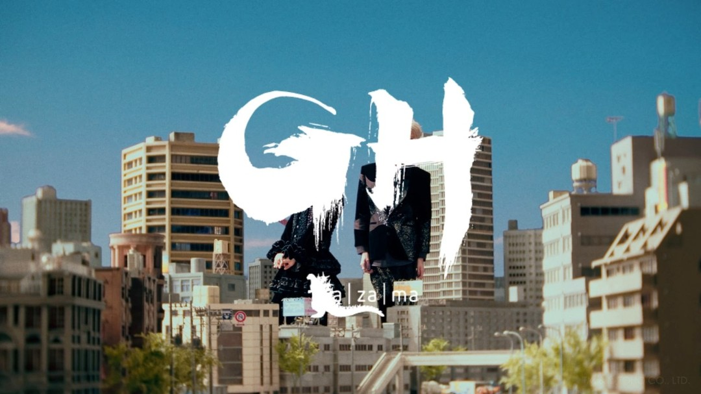

PRODUCTION STAFF / PHOTO
ha | za | ma 特別コラボ新作 『ゴジラ-1.0』concept movie


.
【works】
ha | za | ma 特別コラボ新作
『ゴジラ-1.0』concept movie
@godzilla231103
ヒカワヒカル監督の元、撮影補佐・現場制作・オフショット担当として携わらせて頂きました。
@hikarufancy
--------
【MODEL】
aiai
Ten Yoshii
【Direction】
Director : Hikaru Hikawa
Director of Photography : Haruka Teramoto
Camera Assistant : Ryota Morikawa
Lighting Director : Yamato Watanabe
Lighting Assistant :
Takumi Chujo
Hirari Okuyama
【Production Design】
TOHO EIZO BIJUTSU Inc.
【Extra】
Yoshiya Chimura
Yuiko Yokokura
Aika Sakuari
【Art Direction】
Q-TA
【Hair&Make】
Hair&Make : DAICHI MISAKI
Hair&Make Assistant : honoka.
【ha | za | ma Team】
Hikaru Sato
Hana Fukuyama
Teruki Tsuji
Yuta Hiranuma
ha | za | ma Item Art Direction : Yuki Fujimoto (DAINANASOUKO Inc.)
【Shooting Location】
TOHO STUDIO
【GodzillamMinusOne Planning Producer】
Kazuaki Kishida
【ha | za | ma Designer】
Ryosuke Matsui (MA Inc.)
@ha_za_ma